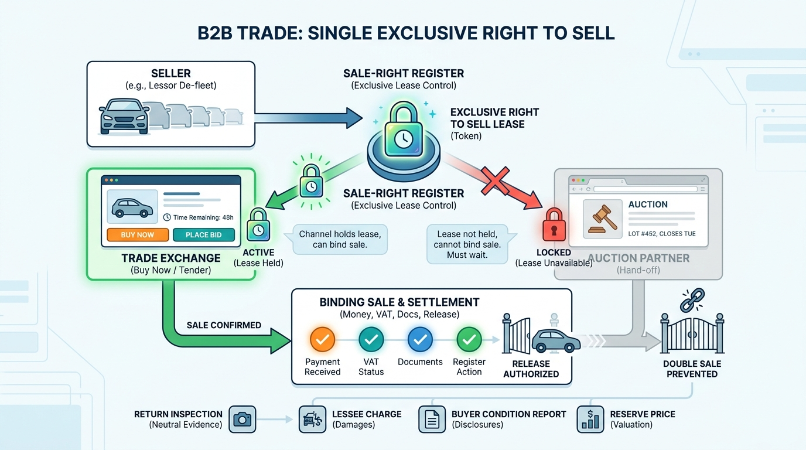

Part IV — DEALER: The Used-Car Workflow
Trader to Trader: B2B Exchanges, Auctions and Lease Remarketing

Image generated by Google Gemini (gemini-3-pro-image-preview)
Part IV — DEALER: The Used-Car Workflow

Image generated by Google Gemini (gemini-3-pro-image-preview)